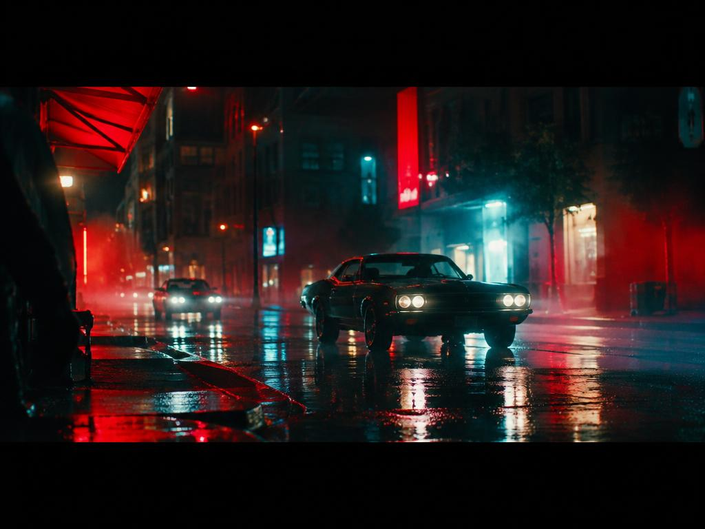
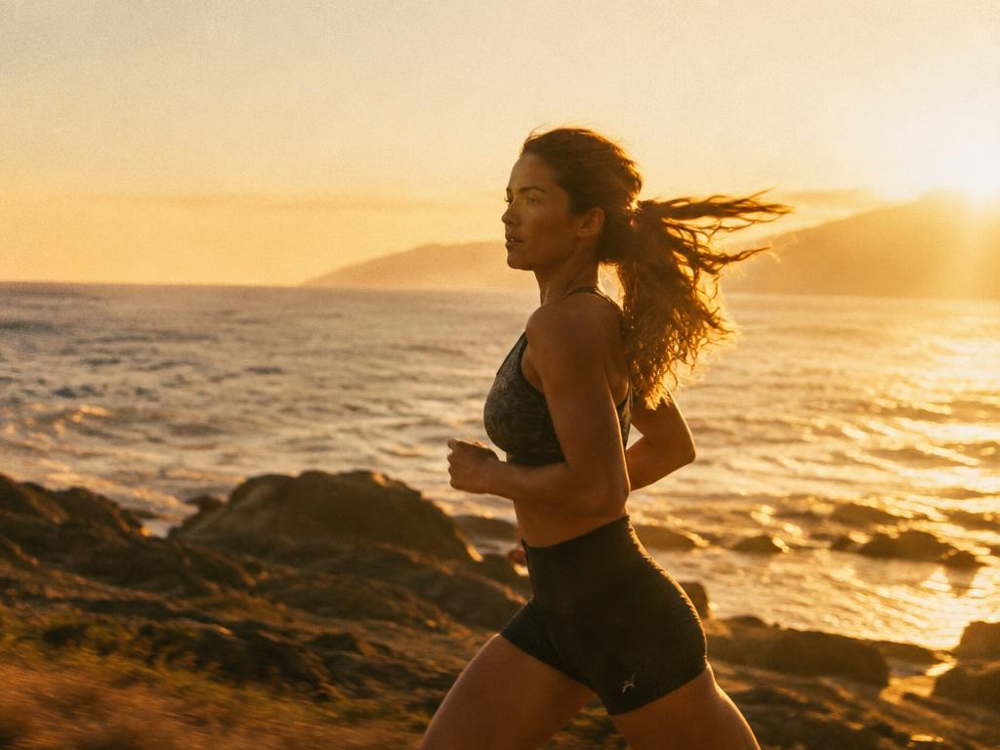
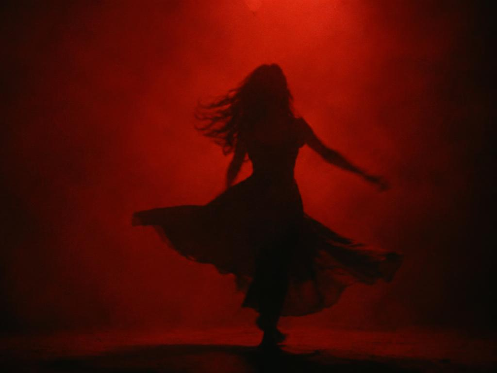

Reel 01
Short-form edit
Portfolio / 01
A growing collection of edits shaped through pace, sound and emotion. The Instagram Reels section below contains the six direct MP4 projects.
Selected work
Direct MP4 playback • No Instagram embeds required.
More categories

Rhythm, atmosphere and visual storytelling.

Emotional short-form highlight edits.

Story-driven film editing.